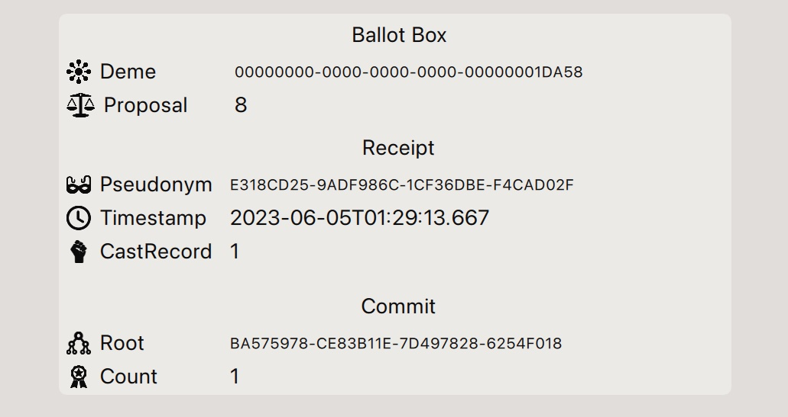

Overview
Note: a more recent and condensed overview is provided in a poster presented at EVoteID 2023
The core primitive for the PeaceFounder voting system revolves around the ability to generate digital signatures using a single private key for distinct generators, all while maintaining the security of the key. The signatures in such cases are supplemented with a corresponding public key for a relative generator at which the signature has been issued. A relationship between these public keys can be established by showing an exponent connecting the relative generators or forming zero-knowledge proof demonstrating the equality of discrete logarithms.
The concept of unlinkability can be harnessed to create an interconnected structure using multiple private keys resembling a knot. In this structure, input pseudonyms—public keys derived by exponentiating input relative generator with private keys—are bound to output pseudonyms. To achieve this, a dealer exponentiates a relative generator and pseudonyms with the same secret exponent and then shuffles the resulting output pseudonym list. We shall refer to this procedure as braiding to distinguish that from mixing objectives where input retains the original form after going through a mix cascade.
To ensure integrity in resulting braids, in particular, that braider had not replaced output pseudonyms with its own, zero-knowledge proofs can be used. This can be done by reformulating exponentiation as ElGamal re-encryption shuffle and consequent decryption as recently proposed in a novel e-voting system design. The zero-knowledge proof of shuffle has been successfully made widely available for ElGamal re-encryption mixnets with Verificatum, which offers proof with relatively standard cryptographic assumptions on the difficulty of computing discrete logarithms and a decisional Diffie Hellman assumption. Combined with zero knowledge proof of correct decryption, a braid proof can be formed, proving to everyone that computations have been performed honestly without revealing the secret exponentiation factor braider had used and can be safely forgotten afterwards. The resulting braid primitive is available in the ShuffleProofs.jl package, which also reimplements Verificatum-compatible proof of shuffle in Julia.
The braid primitive enables anonymisation to be transactional with one braider at a time, thus eliminating the need for complex coordination of parties as it is typical for many re-encryption mixnet or homomorphic-based e-voting systems. In addition, it's also possible to publish this evidence on a bulletin board for everyone to verify without compromising participation privacy.
Bulletin Board

The PeaceFounder's bulletin board is a microservice that accepts transactional records and votes. The primary transactional records include member certificates issued in prospective member interaction with the registrar, braid records which recompute pseudonym member list and corresponding relative generator issued by a braider and proposal records announcing a vote issued by a proposer. The system is configured with a guardian issued deme[1] record, which sets cryptographic parameters, and a rooster, which includes the proposer, registrar, and bulletin board authority identities.
The peacefounder bulletin board, proposer, and registrar microservices are internal and can be managed or delegated by a guardian. This separation accommodates customisation for varied political consensus, criteria for proposal submissions to the ballot box, choice of identity provider, and methods for disclosing registrar information to auditors to verify the authenticity of members. To make testing and deployment easier for new organisations, a bundle that includes a registrar, proposer and bulletin board will be available and deployable on a preferred server of choice and will offer web access for a guardian with sane defaults and configuration options.
Member's client devices actively monitor the bulletin board, ensuring the immutability of records by tracking bulletin board commits. This method of oversight is scalable, as members only request a history tree[2] consistency proofs, eliminating the need to replicate the actual bulletin board records. These proofs guarantee the protection of their votes and others, assuring that modifications to records are prevented when fresh entries are appended to the bulletin board. This streamlined approach enables prompt identification of bulletin board dishonesty, whether through removing or altering records or the malicious creation of a counterfeit ledger to exclude undesirable votes from the official tally.
Auditing
Integral to establishing trust, a pivotal role is the presence of an {\bf auditor}. The auditor is a judicial-like entity representing members and is vital for resolving conflicts. Member client devices create local proofs for altered or removed records or the presence of a counterfeit ledger, which are then sent to the auditor. Moreover, if votes aren't delivered, the auditor can act as a proxy, offering evidence that the bulletin board deliberately omitted specific votes. The auditor also ensures the integrity of the bulletin board's records, confirming each vote's eligibility and unlinkability and ensuring one vote per member.
Notably, the auditor can avoid a formal association with the guardian to verify the integrity of a resulting tally, as all relevant data is on the public bulletin board (except for the registration roll). This autonomy allows members the freedom to select their trusted auditors. If there are unresolved disputes with the bulletin board, members can even take on the auditor role and, if necessary, seek to replace the guardian. The system's transparency further allows auditors to cross-check each other's findings, promoting accuracy and preventing the spread of false claims.
The auditor plays a key role in assessing the registrar to confirm the authenticity of its members. The registrar maintains a registration roll, serving as evidence of every member's authenticity. Authenticity verification can be as simple as a trusted third party's digital signature on a document that includes the organisation's UUID and the index where a member's certificate is recorded. If a third-party identity provider isn't available, a photo or video of an individual displaying a page with the organisation's title and index might suffice. Regardless of the method, the recommended approach is to provide an auditor with a verifiably random subset of members where verifiable randomness, for instance, can be generated with DRAND service to avoid data aggregation.
Coercion and bribery resistance
Another pillar that is necessary for ensuring democratic elections is to prevent coercion and vote buying. A significant risk to the PeaceFounder system is for a briber to ask members to forward their votes through a proxy channel they control. To counter this threat, the bulletin board hides the actual votes, showing only their hashes, and gives voters an option to revote, ensuring both receipt freeness and vote fairness. A sequence number along the vote ensures that only the latest cast vote on the device matters.
This method undermines the confidence of vote buyers and coercers, as it prevents them from ensuring that the votes they've acquired will be counted in the final tally. As a consequence, they can only return bribes after votes are published on the bulletin board. (During the vote, only receipt hashes are published on the bulletin board. This serves to both commit the votes while maintaining fairness and receipt-freeness.) This arrangement erodes the credibility of bribers and coercers, making it less likely for voters to engage with them in such transactions due to the lack of a guaranteed positive/negative outcome.
A secondary concern is the potential for a coercer to ask an individual to show how they had voted on their device. To address this, only a receipt is shown. However, this receipt can be linked to the specific vote on the bulletin board. If coercion becomes a significant threat, the receipt can be visible only briefly, such as 30 minutes after casting a vote. During this window, members can manually record their details in a logbook. While this approach may reduce user-friendliness, it still serves as a robust deterrent against malware.
Malware and spyware detection

The last piece of the puzzle is malware and spyware resistance. An adversary could issue votes without compromising the voter's device in case of key leakage. To counter this, every vote includes a sequence number, which records evidence on the bulletin board when a vote is cast from the voter's device. Moreover, if a vote with a sequence number of one is already on the ledger, the first will override any subsequent vote with the same sequence number. This mechanism prevents malware from silently replacing inactive voter's choices.
After voting concludes and the results are published, each voter receives a bitmask of the votes included in the final tally, along with consistency proofs. Given that this approach is scalable (e.g., 1kB can handle 8192 votes, and bit compression can further reduce size), voters device's compare this bitmask with the index from their most recent vote receipt. This allows them to detect any malware activity and display an alert to the voter.
To ensure the voting process's integrity, the voter's device must remain trustworthy. With the presence of malware, there's a risk that the device could falsely reassure the voter that their vote is cast as intended. To counter this threat, after the vote is submitted, the voter receives a receipt containing a timestamp of the vote's record, the pseudonym under which it was cast, and the index where the vote resides on the ledger. Once voting concludes and all votes are disclosed on the bulletin board, the voter can cross-reference their receipt with the bulletin board, verifying that the vote at the provided index aligns with their choice and matches the timestamp when the vote was cast, as well as checking that it was included in the final tally. By maintaining a written record, voters can ensure the accuracy of their vote, safeguarding against malware alterations, unauthorised revoting, or any attempts to redirect multiple voters to a singular vote.
However, it's essential to acknowledge that voters can only detect malware interference post-vote when comparing their receipt to the bulletin board. Additionally, a voter cannot provide evidence to others that their vote was compromised by malware, which means these instances aren't audited within the PeaceFounder system. As a result, members are encouraged and are responsible for utilising more secure devices less susceptible to malware attacks. For more advanced threats, like a briber mandating malware installation for monitoring or extracting the master key, the use of tamper-resistant hardware becomes essential – an extension larger organisations or states might consider.
Implementation details and responsibilities

To illustrate the responsibilities of different entities and the structure of the communication channels, we've provided a detailed diagram. In this representation, arrows indicate which entity holds responsibility for specific resources. The primary mode of communication is facilitated through JSON within an HTTP request/reply. The JSON is also chosen as a canonical byte string format for data signing, which is selected over the ASN1 DER format due to development resource constraints.
The architecture bifurcates the bulletin board into two distinct ledgers: the braidchain and the ballot boxes. This differentiation arises from the disparate pacing and metadata requirements of records. Additionally, casting votes remains inconsequential to the braidchain's state, justifying the ledger division.
Authorised entities, namely the braidchain recorder and the ballot box collector, as specified in the guardian-issued DemeSpec record, oversee each ledger. These controllers uphold the integrity of newly added records, ensuring their coherence with the existing state. For instance, votes must adhere to a specified time window and need to be appropriately signed with member pseudonyms. Braidchain transactions demand more intricate state management, which will be described later.
In the diagram, arrows necessitating anonymous channels are designated with a TOR label originating from the member. This is a countermeasure against potential adversaries attempting to link votes to members via IP addresses. Although alternative network anonymising solutions exist, TOR is the most prominent, and together with the recent release of the Arti project for Rust, it is ideal for client-side applications [...].
Members can view the bulletin board records through the HTTP Facade, which displays them in a browser-friendly HTML. This provides a secondary channel to verify that votes are cast as intended and counted as cast. A pure JavaScript-based HTTP facade is possible, which can be hosted on a static website, simplifying deployment.
It's imperative to recognise the absence of TLS in all communications. This choice stems from the fact that data from the bulletin board is supported with a signature on Merkle tree root, rendering requests tamper-proof. Moreover, using TLS session resumption for anonymous interactions between members and the bulletin board would unintentionally make the system vulnerable to DDOS attacks during the key establishment phase. Furthermore, eliminating the need for certificate issuance and management streamlines system maintenance and deployment, enhancing usability.
Planed Core Features
The PeaceFounder system is actively focusing on integrating key features in its upcoming iterations to enhance transparency. While not exhaustive, the current list includes well-defined proposals ready for implementation.
PeaceFounderBB
https://github.com/PeaceFounder/PeaceFounder.jl/issues/22
A small democratic community often faces the challenge of limited resources, particularly when it comes to hosting bulletin board data or maintaining a comprehensive website for public record access. However, a recent trend offers a practical solution with static website hosting platforms. These platforms allow the creation of a static website directly from source code stored in a git repository without the hassle of setting up and managing certificates. A popular example is GitHub Pages, which simplifies deployment using action scripts to compile websites from sources.
Integrating a GitHub workflow to compile a webpage makes it an ideal platform for hosting a bulletin board interface. This setup has a dual advantage. The GitHub repository can serve as an authentic storage space for bulletin board records. Secondly, these records are easily accessible to the public via a web interface. Continuous integration further enhances this with build scripts, ensuring the integrity and verification of the bulletin board's contents. Those interested in verifying the bulletin board's integrity independently can either fork the repository and run the action script or clone the data locally.
Additionally, the use of the Zenodo repository enriches this system. Zenodo provides excellent archival workflows and the capability to generate a DOI link. This link serves a similar purpose to dataset references in scientific research, offering a reliable and citable record.
Cast as intended verification during the vote
https://github.com/PeaceFounder/PeaceFounder.jl/issues/21
At present, voters can only confirm that their vote has been cast as intended and accurately counted after the vote has ended and the votes are published. As the publication of votes can be delayed as a measure against coercion, it might discourage voters' participation from verifying that their vote is indeed cast as intended and counted as cast. The key issue lies in the possibility of unnoticed malware on voting devices. If voters don't verify their votes, the likelihood of malware affecting a significant number of votes without detection increases. Thus, having a procedure that enables immediate verification of the voting process is essential to engage more voters to check their votes.
The PeaceFounder system can address this by providing voters with a token displayed on the client's screen for vote verification. This token can be used in a web browser to confirm that the vote has been cast as intended. It also indicates if the vote has been superseded by a subsequent vote or one with a higher sequence number, which may occur if the member's key is compromised. To maintain receipt-freeness, the token remains valid for only a short period, such as 15 minutes. The expiration is crucial; it allows voters to verify their votes while preventing coercion or bribery attempts. It also hinders any unsolicited checks on voters' choices.
Evidence auditing with terminal API
https://github.com/PeaceFounder/PeaceFounder.jl/issues/19
The PeaceFounder system is universally verifiable, a feature ensuring that every vote is cryptographically proven to come from a registered member, even if all involved parties are corrupt. To mitigate the influence of coercion or bribery, the authority can strategically delay the publication of votes, which weakens the link between coercers and their subjects before the voters lose receipt freeness. After the votes are published, every aspect of the voting process is transparent: all proofs of votes are made publicly available. This transparency allows any interested party to audit the election results and, at their convenience, independently reproduce the announced tally.
Membership Termination
https://github.com/PeaceFounder/PeaceFounder.jl/issues/18
Under the current state of PeaceFounder, administrators face a significant limitation: they lack the capability to terminate memberships. This function is crucial in various scenarios. For instance, when a member fails to submit necessary authenticity documents within the allotted time post-registration, their membership must be annulled. Additionally, this feature is vital for addressing privacy concerns, such as when members wish to withdraw and have their associated records deleted. Furthermore, an essential aspect of membership management involves issuing new credentials in cases where a member loses their device or experiences a security breach with their key being compromised.
The process of terminating a membership in PeaceFounder presents its own set of challenges. The core difficulty lies in the inability to link a member's real identity and their current pseudonym, which prevents the removal of it in subsequent braidings. This link is only known exclusively to the member's client device, as it only knows the private key that can generate them.
A straightforward approach to address this issue involves resetting the generator in the braidchain and taking identity pseudonyms of the membership certificates as inputs to subsequent braidings. However, this method presents a significant hurdle, particularly for larger organisations. Implementing this reset each time a member is terminated can be prohibitively expensive. In particular, taking into account that the frequency of membership termination cases increases proportionally with the number of members as well as the required compute to do braidings, making this approach to scale as $O(N^2)$. Therefore, a more sophisticated and nuanced solution is needed.
Extensions
In order to avoid over-commitment, the peacefounder project currently focuses on smaller-scale organisations. This implies that a single developer must be able to maintain the system, that coercion/bribery is not of the utmost importance, and that the electoral roll is not necessary to satisfy the requirements of a law. Thus, those features are not integrated into the current design and can be considered separately as system extensions.
Proof of participation
https://github.com/PeaceFounder/PeaceFounder.jl/issues/12
Some communities may wish to nudge their members to vote, providing benefits for those who have already cast a vote or punishing those who ignore democratic decision-making. In ordinary e-voting systems, that can be easily achieved through a voter’s registry. However, this is not possible for PeaceFounder because voters are completely anonymous when they cast a vote.
One way to address this issue is with a blind signature scheme. The voter takes his identity pseudonym, blinds it with a random factor and includes that in the vote when sent to the ballot box. The collector checks that the vote is valid and, if so, signs the blinded group element at the time when the vote is recorded in the ledger. The blind signature is reused if the voter has already cast a ballot.
The voter then receives an acknowledgement that the vote is permanently recorded in the chain together with the blind signature and timestamp. The voter unblinds the blind signature with its blinding factor and obtains a signature on his identity pseudonym as proof of participation. That can then be safely shown publicly for anyone who wants to see that the person has voted without being linked to the cast vote.
Selection's asymmetric encryption
https://github.com/PeaceFounder/PeaceFounder.jl/issues/16
To maintain the impartiality of auditors/monitors with regard to votes they oversee and further deter potential bribery attempts, an asymmetric encryption method for vote selection is advisable. Under this protocol, the voter's device encrypts a symmetric key asymmetrically and then proceeds to encrypt the vote selection using this symmetric key. The key and the encrypted selection are included in the vote, which is then signed using a pseudonym. Upon receiving the vote, after authenticating its signature, the system decrypts the symmetric key, followed by the vote selection. To ensure the decryption's integrity, a zero-knowledge proof is provided and subsequently published alongside the vote on the bulletin board.
Coerced vote tagging
https://github.com/PeaceFounder/PeaceFounder.jl/issues/16
A threat where coercers forcibly dictate voters' choices while confiscating their devices is a pressing concern beyond the PeaceFounder system. A common solution to such a problem is equipping voters with an option to create a secondary PIN code, which works exactly as the primary PIN code except that the votes are tagged as coerced.
To safeguard against coercers potentially discerning this distinction using a proxy vote submission method, the coercion tag can be asymmetrically encrypted as a group element before transmitting it to the ballot box collector. Upon receipt, the collector would record and then decrypt the coercion tag. A zero-knowledge proof of decryption would ensure the collector's integrity, published together with a vote on the bulletin board.
Votes are disclosed at the conclusion of the process, indicating any tags applied. By lengthening the gap between the tally announcement and the release of the votes, we can diminish the impact of coercive threats and deter unscrupulous voters from awaiting compensation, hinging on the assumption of the briber's credibility. Technically, this mechanism ensures receipt freeness until they appear on the ballot box ledger.
This strategy presumes that no adversarial entity has infiltrated the collector system. To mitigate such risks, deploying multiple collectors, to which voters are randomly pre-assigned, is advised. This introduces a level of inter-collector accountability, as aggregated results should align. Notably, while receipt freeness is limited, the method retains full transparency: all parties can validate the tally's accuracy and verify every vote's eligibility and unlinkability, as well as the validity of the coercion tag.
Sempled Electoral Roll Audits
https://github.com/PeaceFounder/PeaceFounder.jl/issues/17
In order to ensure the integrity of elections, it is crucial that independent auditors audit the legitimacy of members. However, the records that support the membership cannot be made public as it would violate the members' right to freedom of association and would also infringe on GDPR. Keeping these records confidential while ensuring they are sufficiently audited can be challenging and may require reducing openness to prevent any possible leaks.
To overcome this dilemma in favour of more openness, a sampling of the electoral roll could be used. A large enough sample size can provide sufficient confidence that a potentially corrupt registrar could not have affected the election result, whereas keeping it small reduces the impact of leaks from the auditors. This lowers the trust barrier and opens the electoral roll auditing for more independent parties.
Early leaked private key detection
In a situation where the adversary has acquired a member's private key, they can form valid votes that can be included in the bulletin board. To detect that a bitmask is included in the ballot box commit, which the voter retrieves together with consistency proofs. That allows us to see whether tallied votes have been cast from the member's device as it can look into the bitmask for tallied votes after the vote. However, when a member votes after the adversary, the bulletin board could inform about the fact in the receipt.
The problem is that showing on receipt whether the vote is a final submission considered for inclusion in the tally can impede the voter's ability to revote if the coercer/briber waits until the last minute before submitting their acquired vote. This circumvents a measure where publishing votes is delayed for an extended time after the tally is published for eroding trust in bribers and delaying punishment from coercers. Therefore, the response status needs to be asymmetrically encrypted.
The status code can be encrypted as a group element and decrypted on the voter's device. If the submitted vote is not final, the collector encrypts a group element representing status addressed to the pseudonym that cast the vote. The device receives the receipt, and as it only has the private key, the status code can be shown. That allows members to see early whether the vote was already cast with the provided sequence number and superseded it with possible recasting.
Sharded Ballots
In democratic processes, it's conceivable that voters may be presented with an extensive list of ballot questions to express their opinions. However, as evident with comprehensive surveys, there is a noticeable decline in response rates as the number of questions escalates. Further complicating matters is the phenomenon known as the 'voter's paradox,' wherein the impact of a singular vote diminishes in larger elections. Both challenges can be addressed by sharding lengthy ballots among the entire voter base.
In the PeaceFounder system, sharding is trivial due to votes being cast pseudonymously. The initial step in the sharding involves determining all feasible divisions of the ballot and methodically enumerating them. Subsequently, these shards are allocated to pseudonyms, achieved by systematically sorting and matching them in sequence.
Nevertheless, a pronounced security concern emerges. Suppose an adversary assumes control over the proposer and possesses knowledge of a select group of pseudonym owners and their inclinations. In that case, they can manipulate the election outcome by tailoring the proposal and shards. Specifically, critical questions can be allocated to a limited cohort, skewing results in their favour.
To counteract this vulnerability, it's imperative for the proposer to commit to both the ballot and its associated shards, followed by a lottery to randomise the pseudonym list. Leveraging a DRAND service, which collaborates with multiple entities to execute threshold decryption, ensures the generation of predetermined, incorruptible random numbers [...]. These numbers subsequently serve as salt for hashing pseudonyms, which are sorted and allocated to shards accordingly. A critical aspect of this method is making sure the proposal is committed before the lottery result is announced to prevent adversaries from taking advantage of waiting for a favourable lottery outcome. This necessitates the involvement of auditors/monitors to timestamp the braidchain ledger commitments externally.
- 1The term deme here denotes a PeaceFounder instance for a specific organisation. It is inspired by its historical significance in Ancient Greece, where a deme represented a local administrative unit with its own diverse decision-making structure and governance rules.
- 2A history tree is a specialised Merkle tree designed to track chronological changes, enabling efficient and secure state verification at any historical point.